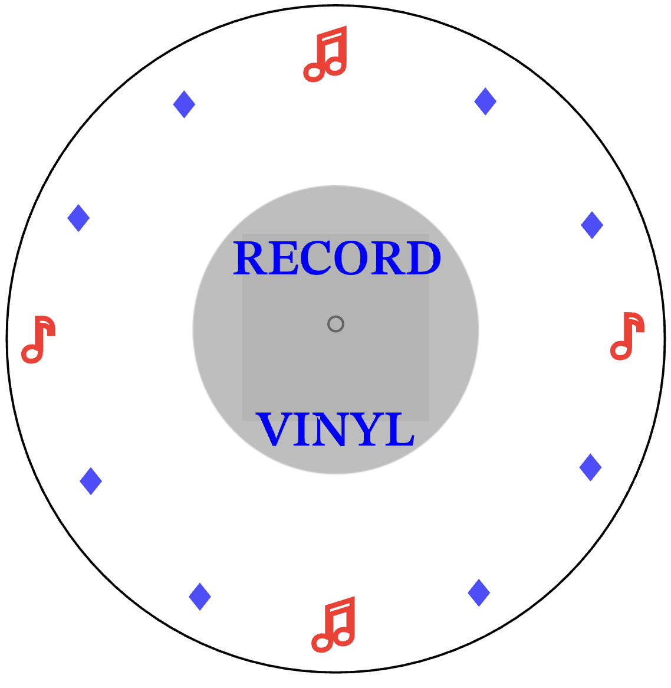

Laser-Cut Clock Prototype
A minimalist clock face designed in Inkscape and fabricated with a laser cutter, inspired by simple, clean shapes.
Overview
For this prototype, I designed a clock face that emphasizes clarity and visual balance. The design needed to be both decorative and functional once cut and assembled.
Process
I sketched ideas and then moved into Inkscape to build a precise vector design. I paid attention to line weights, spacing, and how the negative space would look once the material was cut. The final file was sent to a laser cutter and assembled into a working clock face.
What I Learned
This project taught me how digital vector design connects to fabrication, and how important it is to think through materials, scale, and how details will appear in real life.

